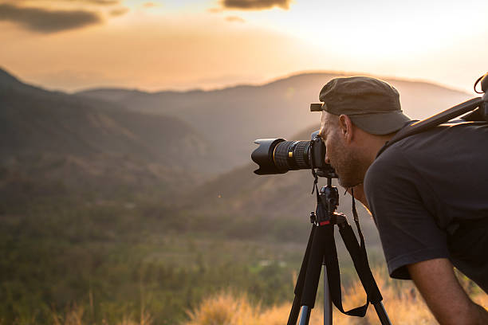
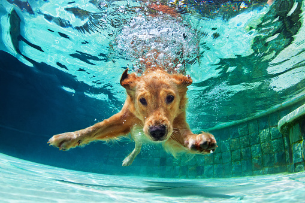

Somos una empresa de la ciudad de medellín dedicada a la toma de fotografias personalizadas para cada cliente. contamos con 10 años de experiencia en el campo profesional
hemos realizado varios servicios en el extrangero y contamos con un amplio reconocimiento en el campo gracias a nuestro excelente trabajo
algo que nos destaca frente a la competencia es la capacidad que tenemos para capturar exactamente lo que desea el cliente
contactanos y danos el gusto de capturar en una fotografia esa idea que tienes en tu imaginación